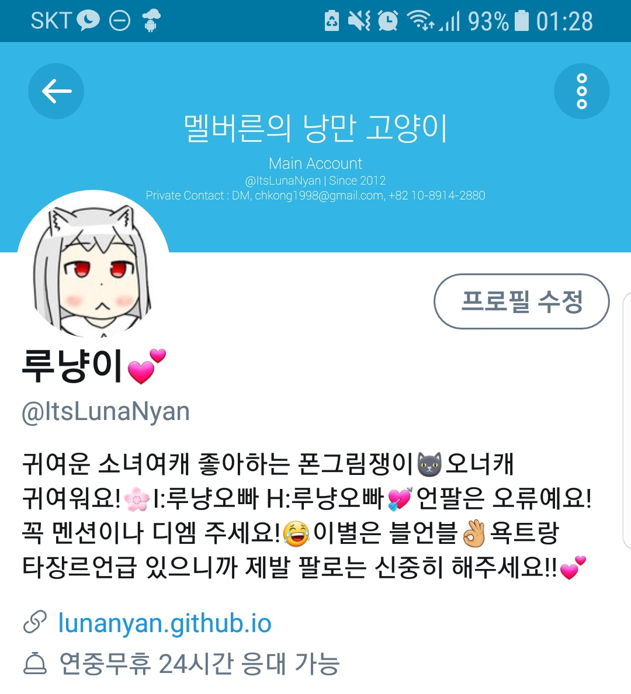

IT를 위주로 파고, 오너캐 덕질을 많이 합니다. 오너캐 너무 귀여워요! >_<
일상트윗이 대부분이라 어떤 분이든 친해지고 싶어요.
재밌어 보이거나 귀여운 분, 취미가 맞는 분이 보이면 팔로하고 있어요! 잘 부탁 드릴게요!
꼭 주의해주셨으면 하는 점은, 저는 멘션을 안 주시고 팔로하시는 분들께서는 제 계정을 구독하시기 위해 팔로하신 것으로 생각하기 때문에 맞팔을 원하신다면 꼭 멘션을 주셨으면 한다는 점이에요! 적어뒀는데도 왜 맞팔 안 해주시냐고 물어보시는 분들이 종종 계시는데, 당황스러운 상황이 생길 수 있으니 꼭 기억해주세요.
무엇을 하시는 분이신가요?
주로 그림, 코딩, 디자인을 하고 있어요. About Me에서도 볼 수 있지만, 웹 코딩, Python, Visual Basic퇴물1을 하고 있어요. 그림은 음.. 그다지 잘 그리는 것 같지는 않네요. 디자인 툴로는 Adobe Flash CS3퇴물2를 쓰고 있어요. 이것도 음.. 잘 하는 것 같지는 않네요. 제가 만든 작업물들은 제 Github 프로필이나 이 사이트의 Works 페이지에서 보실 수 있어요.
어떤 트윗을 올리시나요?
대부분이 일상트거나 의미 없는 혼잣말이예요. 다만 활동하는 곳이 언더케이지와 같은 IT 관련 사이트다 보니 IT나 모바일 기기 관련 트윗이 올라올 때도 있고, 아는 사람만 아는 드립을 치기도 해요. 죄송하지만 이건 제 성격 그 자체라 고칠 방도가 없네요. 본진이 있는 것도 아닌데 타 장르 언급이 좀 있고, 욕트도 좀 해요.
어떻게 부르고, 반모하면 되나요?
저는 인터넷에서 나이가 그렇게 중요한 거라고 생각하진 않습니다. 그래서 여러분의 나이와는 상관없이 먼저 반말을 해 주시면 저도 반말을 사용하고 있어요. 겁나신다면 반모해 달라고 말씀해 주셔도 괜찮답니다.
호칭은 루나냥, 루냥, 루나님 정도로 불러주시면 괜찮을 것 같아요. 형, 오빠, 누나, 언니 같은 호칭도 괜찮답니다. 그냥 편하신 대로 불러주세요.
따로 참고할 만한 게 있나요?

참고로, 본계로 가면 프로필 바이오가 이렇게 되어있을 건데, 반쯤 거짓입니다. 저는 진입장벽이 높아지는 걸 원하지 않기 때문에 팔로우를 신중히 하실 필요는 없어요! 막 구독하거나 팔로우를 걸어 주셔도 괜찮습니다! 아 그리고 이건 모두가 지켜야 할 사항이긴 한데, 장난성으로 팔로 걸었다가 풀어버리는 행동은 하지 말아주세요.
저는 용도에 따라 계정을 5개로 쓰고 있어요. 일단 주 활동 장소가 되는 본계, 본계로 폭트를 쑤다 리밋 먹었을 때 쓰는 피신용 계정, 오너캐 캐입에 사용하는 봇계, Aesthetic한 사진 저장에 쓰는 계정, 그리고 마지막으로 뒷계가 있어요. 굳이 모두 팔로하실 필요는 없어요.
All rights are reserved for this site & personal projects listed above unless license is specified.
Some rights are reserved and all copyrights belong to their respective owners for co-operation projects listed above unless license is specified.